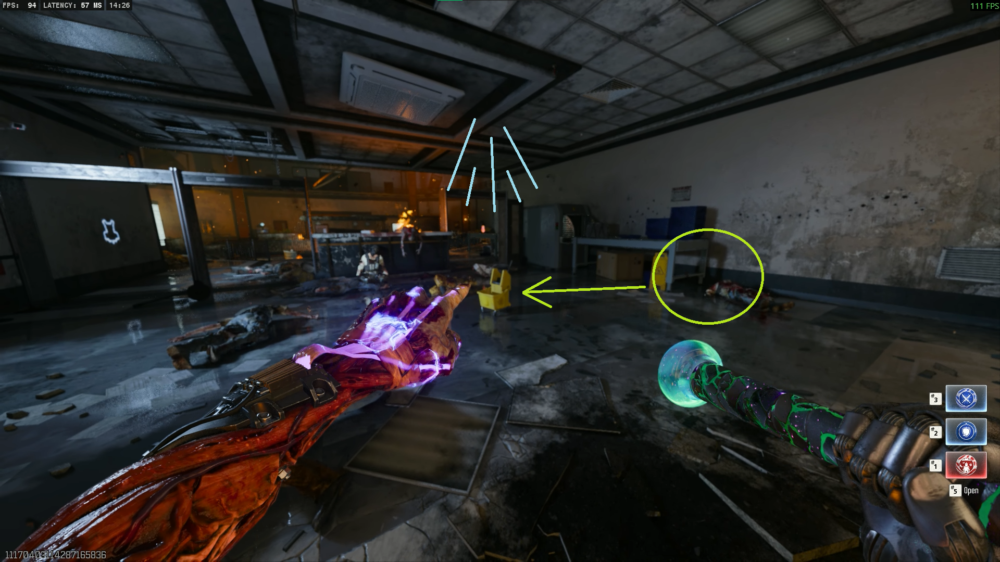

BO6 Main Quest Easter Egg · Round-Based
Reckoning
Break out of the maximum security prison, gather the parts for the Blundergat Wonder Weapon, and face off against the Warden in this intense lockdown scenario.
18
Quest Steps
1–2h
Avg Time
★★☆
Difficulty
1–4P
Players
Recommended Loadout
Pre-GamePerks Priority
Jugger-Nog
Mandatory — 4× HP base
Double Tap II
Double fire rate + damage
Quick Revive
Solo lifesaver; squad revive speed boost
Speed Cola
Faster reloads and use speed
Weapons
KN-44 / M8A7 (PaP Tier 2)
Best AR for round survivability
Blundergat (WW)
The core Wonder Weapon — obtain via quest
Gobblegums
Perkaholic
All perks instantly
Always Done Swiftly
Walk while ADS
Power On the Prison
Rounds 1–3STEP 01
Find the Mop Bucket
Locate the mop bucket in the prison.

STEP 02
Obtain the Keycard
Get the keycard from the drop location.
STEP 03
Activate Power Switches
Turn on the power switches to restore electricity.
Build the Blundergat
Rounds 4–8STEP 04
Gather Blundergat Parts
Collect the components needed for the Blundergat.
STEP 05
Assemble the Blundergat
Combine the parts at the crafting station.
Warden Boss Fight
Rounds 9+With the Blundergat built, the Warden appears. Use the weapon to defeat this formidable foe.
1
Phase 1 — Opening Assault
Engage the Warden with the Blundergat and avoid its attacks.
2
Phase 2 — Shield Destruction
Break through the Warden's defenses to expose vulnerabilities.
3
Phase 3 — Final Confrontation
Deliver the killing blows to end the fight.
🏰 Boss Survival Tips
- Use the Blundergat's spread shots for crowd control.
- Stay behind cover during the Warden's charge attacks.
- Coordinate reloads to maintain constant fire.